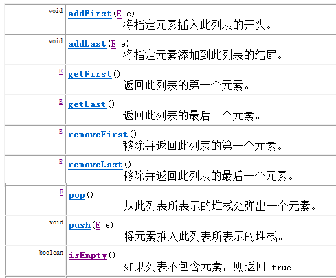
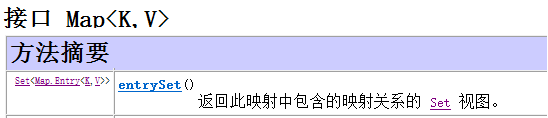

1. List接口
List接口：
- 它是一个元素存取有序的集合。例如，存元素的顺序是11、22、33。那么集合中，元素的存储就是按照11、22、33的顺序完成的）。
- 它是一个带有索引的集合，通过索引就可以精确的操作集合中的元素（与数组的索引是一个道理）。
- 集合中可以有重复的元素，通过元素的equals方法，来比较是否为重复的元素。
List接口的常用子类有：
1.1 List接口的常用方法
1.2 List集合的迭代：
方式一：使用迭代器Iterator
1 | Iterator<String> it = list.iterator(); |
方式二：使用索引迭代
1 | for (int i = 0; i < list.size(); i++) { |
迭代器Iterator**
迭代器是一种设计模式，它是一个对象，它可以遍历并选择序列中的对象，而开发人员不需要了解该序列的底层结构。迭代器通常被称为“轻量级”对象，因为创建它的代价小。
- Java中的Iterator功能比较简单：
(1) 使用方法iterator()要求容器返回一个Iterator。第一次调用Iterator的next()方法时，它返回序列的第一个元素。注意：iterator()方法是java.lang.Iterable接口,被Collection继承。
(2) 使用next()获得序列中的下一个元素，返回值是Object类型，必要时需要强制转换成自己需要的类型。
(3) 使用hasNext()检查序列中是否还有元素。
(4) 使用remove()将迭代器新返回的元素删除。
Iterator是Java迭代器最简单的实现，为List设计的ListIterator具有更多的功能，它可以从两个方向遍历List，也可以从List中插入和删除元素。
l Iterator的并发修改异常
在迭代过程中，使用了集合的方法对元素进行操作。导致迭代器并不知道集合中的变化，容易引发数据的不确定性。
并发修改异常解决办法：在迭代时，不要使用集合的方法操作元素。那么想要在迭代时对元素操作咋办？通过ListIterator迭代器操作元素是可以的，ListIterator的出现，解决了使用Iterator迭代过程中可能会发生的错误情况。
1.3 List集合存储数据的结构
List接口下有很多个集合，它们存储元素所采用的结构方式是不同的，数据存储的常用结构有：堆栈、队列、数组、链表。
- 堆栈，采用该结构的集合，对元素的存取有如下的特点：
- 先进后出（即，存进去的元素，要在后它后面的元素依次取出后，才能取出该元素）。
- 栈的入口、出口的都是栈的顶端位置
- 压栈：就是存元素。即，把元素存储到栈的顶端位置，栈中已有元素依次向栈底方向移动一个位置。
- 弹栈：就是取元素。即，把栈的顶端位置元素取出，栈中已有元素依次向栈顶方向移动一个位置。
- 队列，采用该结构的集合，对元素的存取有如下的特点：
- 先进先出（即，存进去的元素，要在后它前面的元素依次取出后，才能取出该元素）。
- 队列的入口、出口各占一侧。
- 数组，采用该结构的集合，对元素的存取有如下的特点：
- 查找元素快：通过索引，可以快速访问指定位置的元素
- 增删元素慢：
- 指定索引位置增加元素：需要创建一个新数组，将指定新元素存储在指定索引位置，再把原数组元素根据索引，复制到新数组对应索引的位置。
- 指定索引位置删除元素：需要创建一个新数组，把原数组元素根据索引，复制到新数组对应索引的位置，原数组中指定索引位置元素不复制到新数组中。
链表，采用该结构的集合，对元素的存取有如下的特点：
- 多个节点之间，通过地址进行连接。
- 查找元素慢：想查找某个元素，需要通过连接的节点，依次向后查找指定元素
增删元素快：
增加元素：操作如左图，只需要修改连接下个元素的地址即可。
* 删除元素：操作如右图，只需要修改连接下个元素的地址即可。
1.4 ArrayList集合
ArrayList集合数据存储的结构是数组结构。元素增删慢，查找快，由于日常开发中使用最多的功能为查询数据、遍历数据，所以ArrayList是最常用的集合。
l 用contains方法判断重复元素
调用ArrayList的contains方法时，传入的元素的equals方法依次与集合中的旧元素比较，从而根据返回的布尔值判断是否有重复元素。
此时，当ArrayList存放自定义类型时，由于自定义类型在未重写equals方法前，判断是否重复的依据是地址值，所以如果想根据内容判断是否为重复元素，需要重写元素的equals方法。
1.5 LinkedList集合
LinkedList集合数据存储的结构是链表结构。方便元素添加、删除的集合。实际开发中对一个集合元素的添加与删除经常涉及到首尾操作，而LinkedList提供了大量首尾操作的方法。如下图

2. Set集合
Set集合的元素是无序存放的，所以不允许存在重复元素。
2.1 HashSet集合介绍
HashSet集合不能保证的迭代顺序与元素存储顺序相同。
HashSet集合，采用哈希表结构存储数据，保证元素唯一性的方式依赖于：hashCode()与equals()方法。
2.2HashSet集合存储数据的结构（哈希表）**
什么是哈希表呢？
哈希表底层使用的也是数组机制，会根据这些对象的特有数据结合相应的算法，计算出这个对象在数组中的位置，然后把这个对象存放在数组中。而这样的数组就称为哈希数组，即就是哈希表。
即就是在给哈希表中存放对象时，会调用对象的hashCode方法，算出对象在表中的存放位置，这里需要注意，如果两个对象hashCode方法算出结果一样，这样现象称为哈希冲突，这时会调用对象的equals方法，比较这两个对象是不是同一个对象，如果equals方法返回的是true，那么就不会把第二个对象存放在哈希表中，如果返回的是false，就会把这个值存放在哈希表中。
总结：保证HashSet集合元素的唯一，其实就是根据对象的hashCode和equals方法来决定的。如果我们往集合中存放自定义的对象，那么保证其唯一，就必须复写hashCode和equals方法建立属于当前对象的比较方式。
2.3向HashSet集合中存储元素
- 存储JavaAPI类型
给HashSet中存储JavaAPI中提供的类型元素时，不需要重写元素的hashCode和equals方法，因为这两个方法，在JavaAPI的每个类中已经重写完毕，如String类、Integer类等。
1 | public class HashSetDemo { |
输出结果如下，说明集合中不能存储重复元素：
wangwu
lisi
zhangsan
- 存储自定义类型元素
给HashSet中存放自定义类型元素时，需要重写对象中的hashCode和equals方法，建立自己的比较方式，才能保证HashSet集合中的对象唯一。
1 | //创建自定义类型Student**** |
创建HashSet集合，存储Student对象。
1 | public class HashSetDemo { |
2.4HashSet判断是否有重复元素
Set集合不能存放重复元素，其添加方法在添加时会判断是否有重复元素，有重复不添加，没重复则添加。
HashSet集合由于是无序的，其判断唯一的依据是元素类型的hashCode与equals方法的返回结果。规则如下：
先判断新元素与集合内已经有的旧元素的HashCode值如果不同，说明是不同元素，添加到集合。 如果相同，再判断equals比较结果。返回true则相同元素；返回false则不同元素，添加到集合。
所以，使用HashSet存储自定义类型，如果没有重写该类的hashCode与equals方法，则判断重复时，使用的是地址值，如果想通过内容比较元素是否相同，需要重写该元素类的hashcode与equals方法。
2.5 LinkedHashSet介绍**
我们知道HashSet保证元素唯一，可是元素存放进去是没有顺序的，那么我们要保证有序，怎么办呢？
在HashSet下面有一个子类LinkedHashSet，它是链表和哈希表组合的一个数据存储结构。
演示代码如下：
1 | public class LinkedHashSetDemo { |
输出结果如下，LinkedHashSet集合保证元素的存入和取出的顺序：
bbb
aaa
abc
Bbc
3. Map接口
Map中的集合有以下特点：
- Map中的集合，元素是成对存在的。每个元素由键与值两部分组成，通过键可以找对所对应的值。
- Collection中的集合称为单列集合，Map中的集合称为双列集合。
- 需要注意的是，Map中的集合不能包含重复的键，值可以重复；每个键只能对应一个值。
Map中常用的集合为HashMap集合、LinkedHashMap集合。
- HashMap
- LinkedHashMap
- 注意：Map接口中的集合都有两个泛型变量
3.1 Map接口常用方法
put方法：将指定的键与值对应起来，并添加到集合中
- 方法返回值为键所对应的值
使用put方法时，若指定的键(key)在集合中没有，则没有这个键对应的值，返回null，并把指定的键值添加到集合中；
使用put方法时，若指定的键(key)在集合中存在，则返回值为集合中键对应的值（该值为替换前的值），并把指定键所对应的值，替换成指定的新值。
get方法：获取指定键(key)所对应的值(value)
remove方法：根据指定的键(key)删除元素，返回被删除元素的值(value)。**
3.2 Map集合遍历键找值方式
键找值方式：即通过元素中的键，获取键所对应的值
操作步骤与图解：
1.获取Map集合中所有的键，由于键是唯一的，所以返回一个Set集合存储所有的键
2.遍历键的Set集合，得到每一个键
3.根据键，获取键所对应的值
3.3 Entry键值对对象
在Map类设计时，提供了一个嵌套接口：Entry。Entry将键值对的对应关系封装成了对象。即键值对对象，这样我们在遍历Map集合时，就可以从每一个键值对（Entry）对象中获取对应的键与对应的值。
l Entry是Map接口中提供的一个静态内部嵌套接口。
l getKey()方法：获取Entry对象中的键
l getValue()方法：获取Entry对象中的值

l entrySet()方法：用于返回Map集合中所有的键值对(Entry)对象，以Set集合形式返回。
3.4 Map集合遍历键值对方式**
键值对方式：即通过集合中每个键值对(Entry)对象，获取键值对(Entry)对象中的键与值。
操作步骤与图解：
1.获取Map集合中，所有的键值对(Entry)对象，以Set集合形式返回。
2.遍历包含键值对(Entry)对象的Set集合，得到每一个键值对(Entry)对象
3.通过键值对(Entry)对象，获取Entry对象中的键与值。
注意：Map集合不能直接使用迭代器或者foreach进行遍历。但是转成Set之后就可以使用了。因为增强for循环只能用在数组或实现Interable接口的集合类上，而Map集合并没有实现Interable接口。3.5 HashMap存储自定义类型键值
- 当给HashMap中存放自定义对象时，如果自定义对象作为key存在，这时要保证对象唯一，必须复写对象的hashCode和equals方法(如果忘记，请回顾HashSet存放自定义对象)。
- 如果要保证map中存放的key和取出的顺序一致，可以使用LinkedHashMap集合来存放。
4. 可变参数
JDK1.5 以后，如果我们定义一个方法需要接收多个同类型的参数，那么可用可变参数来传参。
1 | 修饰符 返回值类型 方法名(参数类型... 形参名){ } |